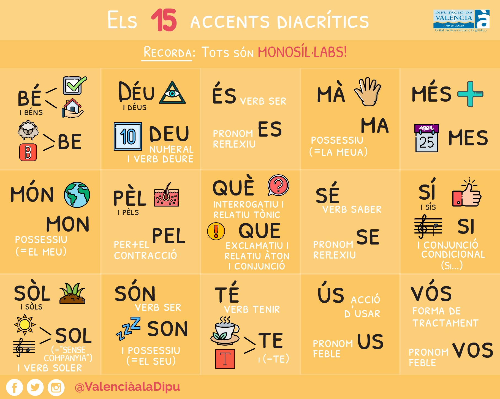

ACCENTS DIACRÍTICS
SA2 · Paraules que viatgen · Apartat 02
📖 Recordem la teoria!
Algunes paraules porten accent diacrític per distingir-les d’altres que s’escriuen igual però tenen significats diferents.

Observa el significat de cada paraula dins de la frase.
✏️ Practiquem
Tria entre les dues opcions: amb accent o sense accent.